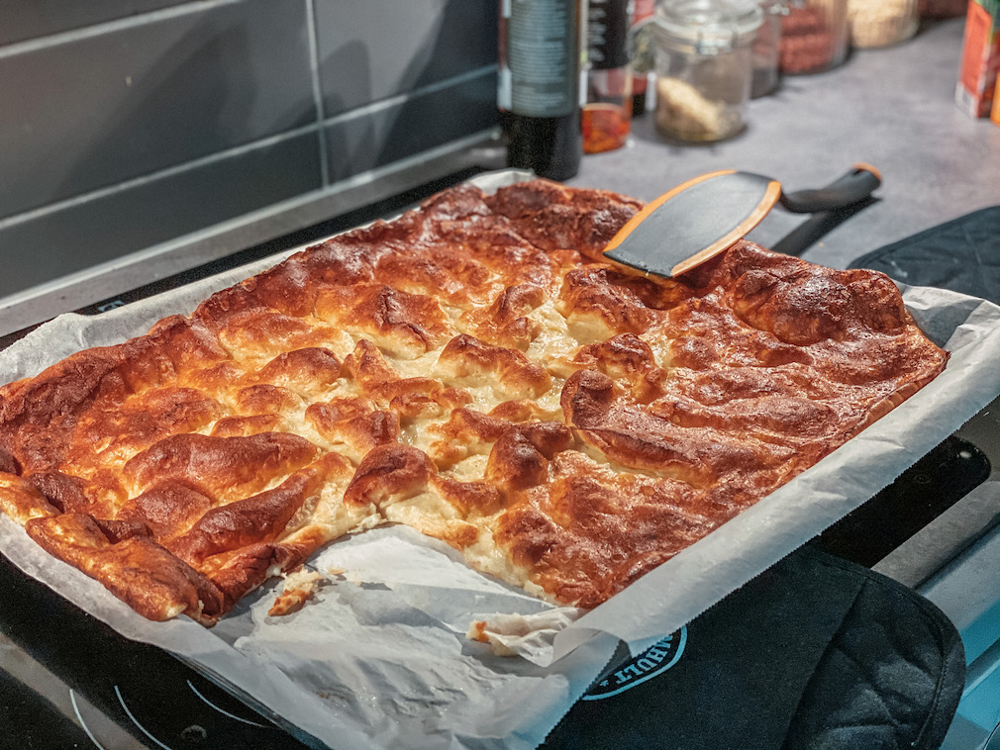

Pannukakku

Description
Unlike most pancakes, this vanilla flavoured version hailing from Finland is baked rather than fried or grilled, giving it a soft, buttery, puffed-up interior and a delicately crispy crust.
Ingredients
- 400ml flour
- 150ml sugar
- 1 teaspoon baking powder
- 1 teaspoon salt
- 1 teaspoon vanilla suagr
- 800ml milk
- 2 eggs
- 100g melted butter
Steps
- Mix dry ingredients then add milk, eggs and cool, melted butter. Mix thoroughly.
- Pour into a baking paper lined pan.
- Bake for approx. 30 minutes in a preheated oven at 200 - 225 celcius.
Home
Back to Top